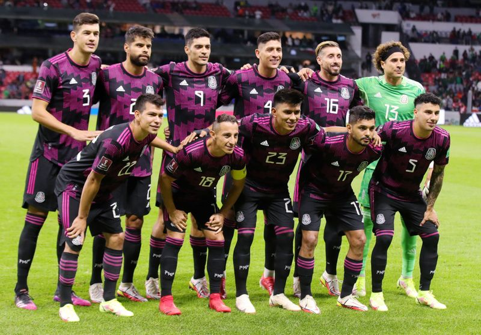

Seleção do México
Seleção do México nas Copas do Mundo
A seleção mexicana participou de sua 16ª edição da Copa do Mundo de futebol em 2018. Os
melhores desempenhos da seleção mexicana foram em 1970 e 1986 quando o México chegou às
quartas-de-final. Nas duas ocasiões a seleção mexicana era anfitriã da Copa do Mundo de futebol.
Desde 1994 o México é eliminado nas oitavas de final. Em 2018 a seleção mexicana foi eliminada
nesta fase pela sétima vez seguida.

Retrospecto da seleção do México em Copas do Mundo
1930 - Eliminada na 1ª fase
1934 - Não disputou
1938 - Desisitiu
1950 - Eliminada na 1ª fase
1954 - Eliminada na 1ª fase
1958 - Eliminada na 1ª fase
1962 - Eliminada na 1ª fase
1966 - Eliminada na 1ª fase
1970 - Eliminada nas quartas-de-final
1974 - Não se classificou
1978 - Eliminada na 1ª fase
1982 - Não se classificou
1986 - Eliminada nas quartas-de-final
1990 - Desclassificada*
1994 - Eliminada nas oitavas-de-final
1998 - Eliminada nas oitavas-de-final
2002 - Eliminada nas oitavas-de-final
2006 - Eliminada nas oitavas-de-final
2010 - Eliminada nas oitavas-de-final
2014 - Eliminada nas oitavas-de-final
2018 - Eliminada nas oitavas-de-final
Técnico da Seleção do México
Tata Martino
Goleiros
Carlos Acevedo
David Ochoa
zagueiro
Jesús Angulo
Israel Reyes
Luis Olivas
Arturo Ortiz
lateral
Érick Aguirre
Jonathan Gómez
Kevin Álvarez
volante
Erik Lira
Meias
Érick Sánchez
Luis Chávez
Fernando Beltrán
Alejandro Zendejas
Sebastián Córdova
Marcelo Flores
Pontas e Centroavantes
Jordán Carrillo
Roberto Alvarado
Santiago Giménez
Eduardo Aguirre